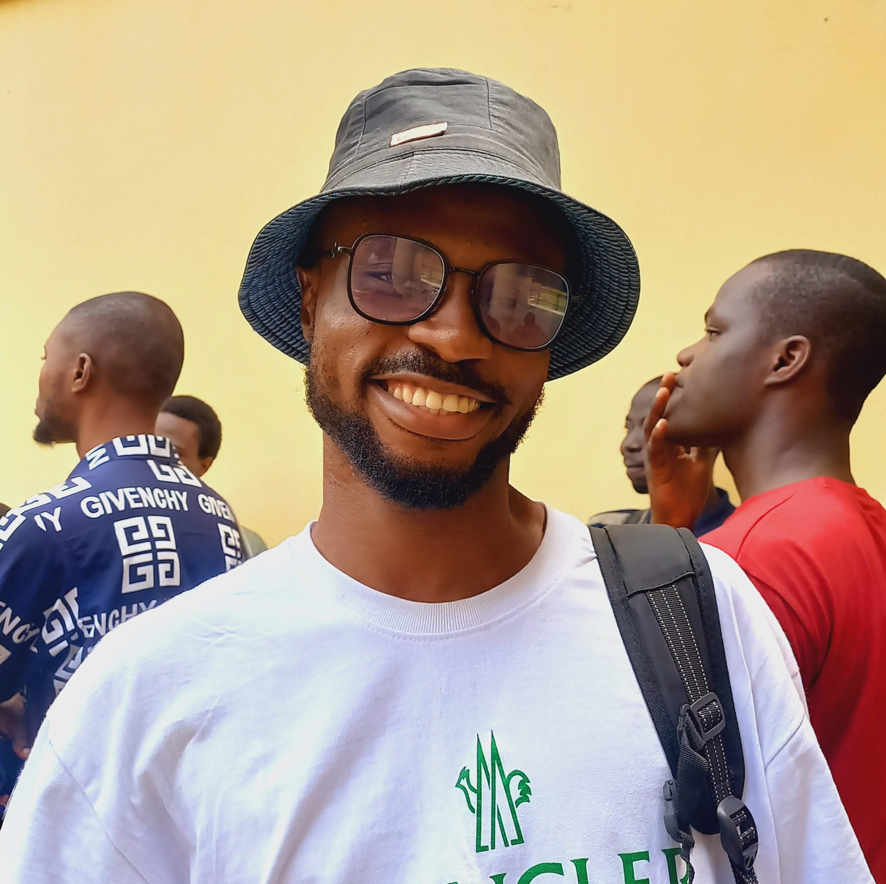

OLATUNBOSUN Adekunle Abdul-Quadri

A web developer
I started learning web development in my final year in the university. While learning, I derive more joy in coding as there isn't as much constants in the profession. Web development embrases the intense use of creativity without limitation to how much a person can be creative.
Education
My Highest Education Qualification is B.Sc in Civil Engineering from Obafemi Awolowo University, Ile-Ife, Osun State.
I acquired this certificate on August 2023.
Work Experience
Tailoring
July 2016 - November 2023Civil Engineering
March 2024 - till dateWeb Development
April 2023 - till date
Skills include:
- Data Analyst
- Project Management
- Fine Art and 3D drawings with software
- Tailoring
Awards & Certificates
- Completion certificate for B.Sc Civil Engineering (August 2023)
- Completion Certificate for Prota Structure software (February 2024)
- Completion Certificate for Primavera (April 2024)